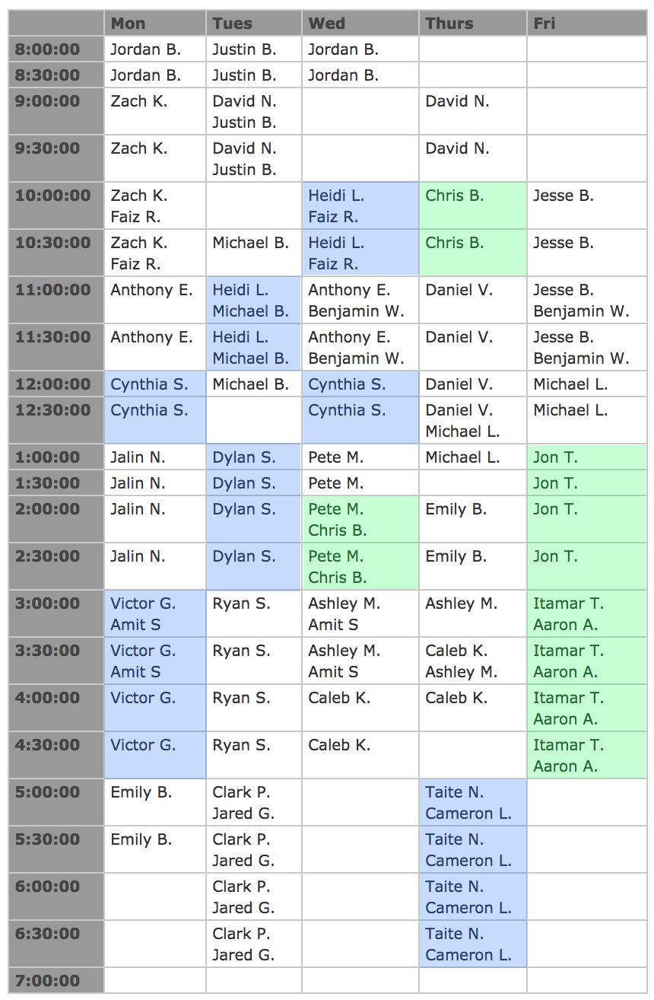

Welcome to the cs101 course homepage. This course is taught at the University of Arizona in the Spring 2018 semester.
This course introduces students to some of the big ideas in computer science. It is intended for students who have no prior programming or computer-science experience. Students will leave this course with basic programming and problem-solving skills, increased technical literacy, and a greater ability to recognize problems that can be solved by computation.
Can be found here. The syllabus has general course information, instructor contact info, meeting times, grading policies, and other policies.
Grades will be posted/distributed on D2L.
All students are required to register for the cs101 Piazza page. All class announcements will either be made in-class or on piazza. Students are also encouraged to ask questions about assignments, and discuss while reviewing for exams. Remember: If asking a question about a homework problem, do not reveal specifics of your solution to the entire class. If you want to include details of your solutions, post privately to the instructors only.
Below is the Computer Science department section-leader lab hours. You can visit the lab and get help from any of the section leaders, even ones that are not in 101. However, the 101 SLs may be able to provide you with more direct help (being more familiar with the assignments). Their’s are highlighted in green. The lab hours for former 101 SLs are highlighted in blue.
These are hosted in Gould-Simpson 228.

** The contents of this site (including but not limited to the syllabus, schedule, lecture notes, and homework assignments) are subject to change **